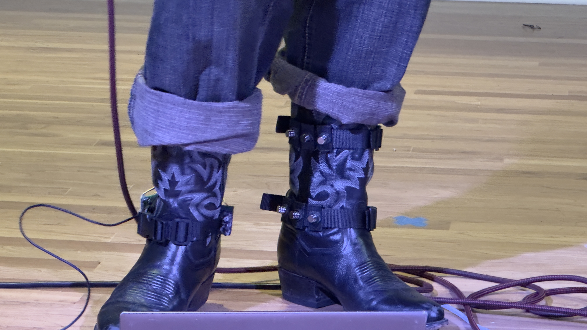
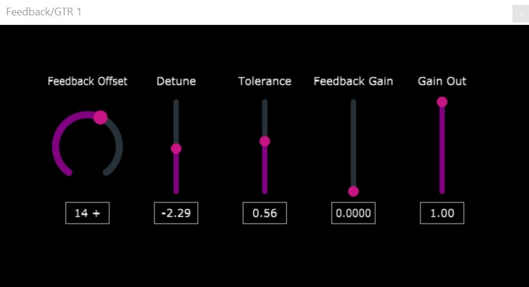
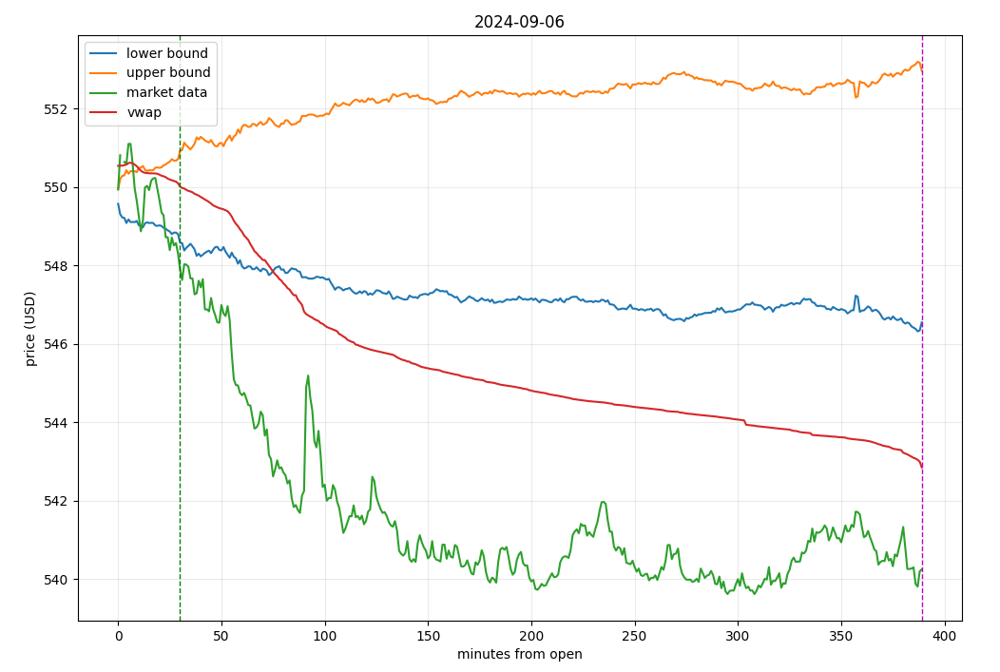

Bootstrap: Wearable FX

Guitar pedals often lack dynamic settings since they are typically operated with on/off switches or occasionally with a foot pedal. Motivated by this, I decided to create an alternative - one that could leverage the user's physical movements to afford natural and dynamic musical expression. I began by using AutoCAD to design and 3D print the physical components. Then, I used Hall-Effect Sensors and Force Sensitive Resistors to pick up foot gestures, and finally, I developed a C program to handle these analog signals and generate MIDI data to transform my guitar's signal. The end result was a wearable, programmable music controller that straps to the user's shoes or boots.
Feedback: C++ Audio Plugin

For this project, I used the JUCE C++ framework to develop a VST3 plugin for guitar playing. At Stanford, I took numerous signal processing and recording classes at CCRMA (the Center for Computer Research in Music and Acoustics). These classes motivated me to make my own technologies for recording and producing music. The plugin tracks the signal's pitch and synthesizes a tone to mimic the feedback of a traditional electric guitar going through an amplifier. This project served as a great introduction to UI design as well as the basics of building a project and practicing version control with Git and Git repositories.
Python Momentum Trading

For this project, I created a momentum trading strategy in Python. I should note that I based my strategy on one discussed in a research paper (the citation can be found in the readme.txt file). This project involved gathering financial data using yFinance, calculating indicators like volume-weighted averages and volatility, and generating buy or short-sell signals based on these indicators. In general, this project served as a great opportunity to deepen my understanding of data science, algorithmic trading, and financial markets. Furthermore, the experience gave me a solid understanding of how to implement and backtest a trading strategy using Python.